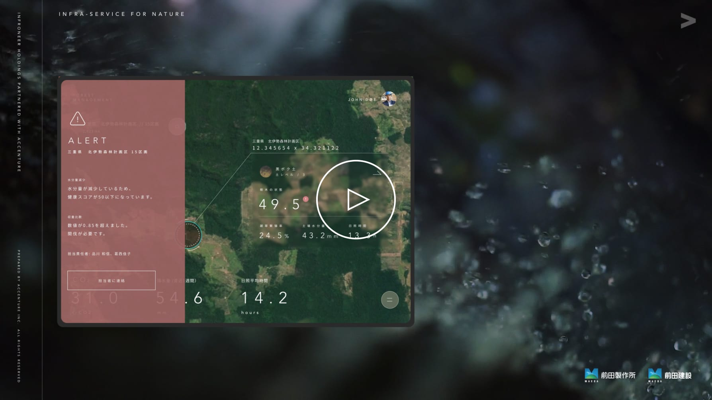

企業の変革ビジョンを高い解像度で描く
UI/UX連動ブランドムービー
UI/UX連動ブランドムービー
前田建設工業、前田道路、前田製作所が経営統合し、発足したインフロニア・ホールディングスと、経営パートナーであるアクセンチュアが示す、変革のビジョンを映像化しました。ブリーフ時のサービス案や映像構成案を基に、具体的なUI/UXの開発・コピーライティング・映像編集を同時進行で進めました。特にUI/UXを初期に高い解像度で具体化することで、ビジュアルと言葉の重複を避け、膨大な情報量を一体感のあるシンプルなムービーとして仕上げることができました。